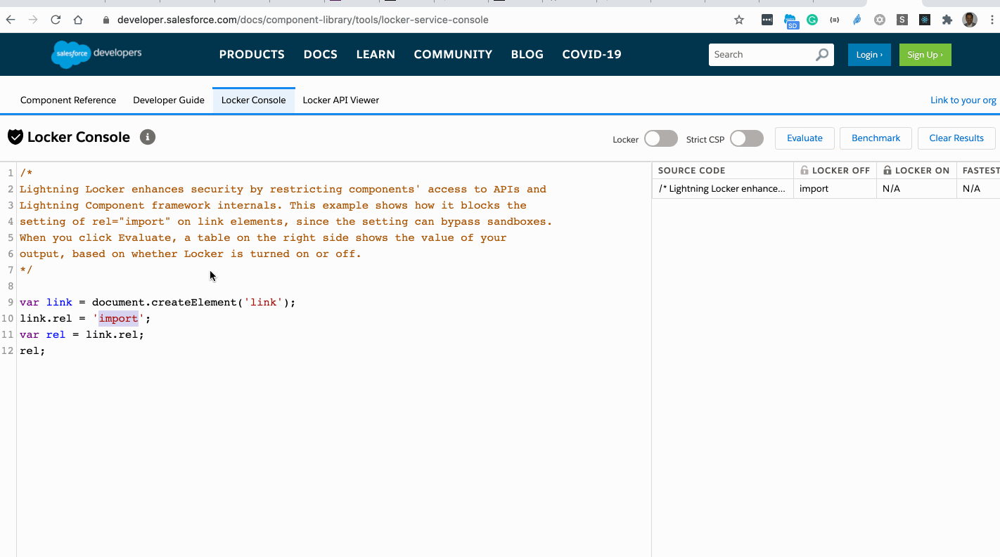
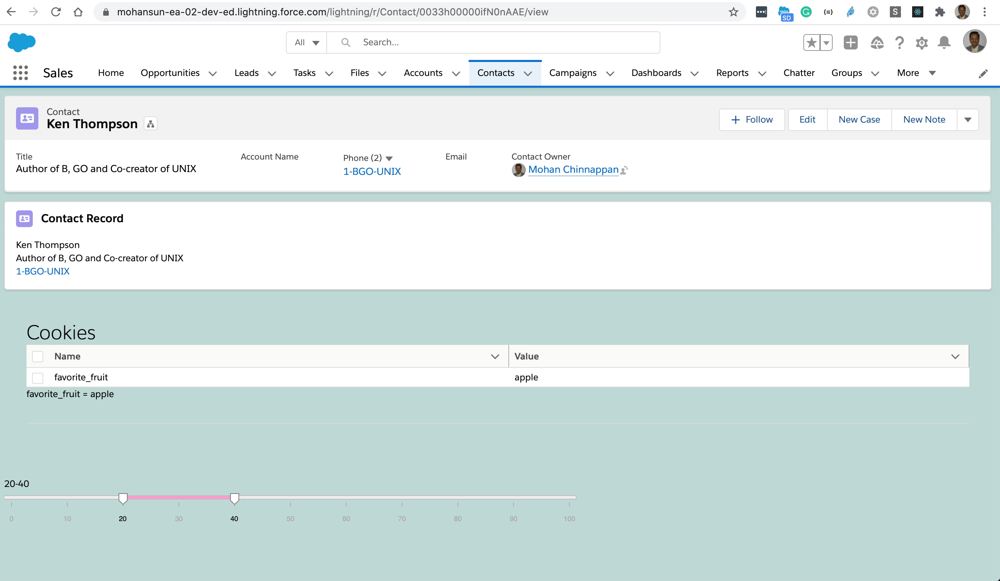

8. Security with Lightning Locker

- Lightning Locker provides:
-
component isolation and security that allows code from many sources to execute and interact using safe, standard APIs and event mechanisms.
-
Lightning Locker is enabled for all custom Lightning web components.
-
strict mode "use strict"
- Lightning Locker implicitly enables JavaScript strict mode everywhere
- JavaScript strict mode makes code more secure, robust, and supportable.
DOM Access Containment
- A component can only traverse the DOM and access elements that it created.
- This behavior prevents the anti-pattern of reaching into DOM elements owned by other components.
- Lightning web components can’t use the
windowordocumentglobal properties to query for DOM elements. - For example, use
this.template.querySelector()instead ofdocument.querySelector().
Secure Wrappers
- For security, Lightning Locker restricts the use of global objects by hiding an object or by wrapping it in a secure version of the object.
- For example, the secure version of window is
SecureWindow. - Locker intercepts calls to window and uses SecureWindow instead.
- For example, the secure version of window is
Third-Party Web Components
- To prevent security risks, you can’t use third-party web components on the Salesforce platform.
- Web components are custom elements. To define a custom element, you must use the customElements.define API. However, this API is global, and allows you to globally register a component name.
- Registering a name globally is a security risk because an attacker could register any name and take over the page.
- Lightning Locker’s SecureWindow wrapper blocks the customElements methods that create custom web components.
Locker Console
- We can use locker console to check your code
- Locker API Viewer
- Build Secure Apps with Lightning Web Components
Demo of using Locker Console

/*
Lightning Locker enhances security by restricting components' access to APIs and
Lightning Component framework internals.
- The example #1 shows how it blocks the setting of rel="import" on link elements, since the setting can bypass sandboxes.
When you click Evaluate, a table on the right side shows the value of your
output, based on whether Locker is turned on or off.
- The example #2 shows results of document.cookie
-
*/
var link = document.createElement('link');
link.rel = 'import';
var rel = link.rel;
rel;
const cookies = [];
const citems = document.cookie.split(';');
citems.forEach( item => {
const [name, value] = item.split('=');
cookies.push( {name, value});
});
JSON.stringify(cookies, null,4);
- Note: Your LWC component is limited in accessing
document.cookie- only cookies that were set from the LWC component can be accessed.
Component code
import { LightningElement } from "lwc";
const columns = [
{fieldName: "name", label: 'Name'},
{fieldName: "value", label: 'Value'},
];
export default class App extends LightningElement {
title = "Cookies";
columns = columns;
// Note: Your LWC component is limited in accessing document.cookie
// - only cookies that were set from the LWC component can be accessed.
get cookies() {
document.cookie = "favorite_fruit=apple";
const citems = document.cookie.split(';');
const cookies = [];
citems.forEach( item => {
const [name, value] = item.split('=');
cookies.push( {name, value});
});
return cookies;
}
}
Component markup
<template>
<div class="app slds-p-around_x-large">
<h1 class="slds-text-heading_large">{title}</h1>
<lightning-datatable key-field="name" data={cookies} columns={columns}>
</lightning-datatable>
<template for:each={cookies} for:item="cookie">
<div key={cookie.value}>
{cookie.name} = { cookie.value}
<hr />
</div>
</template>
</div>
</template>
Component use
